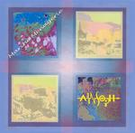

| Artist: | Ain Soph |
| Title: | Marine Menagerie |
| Label: | Poseidon/Musea PRF-029/FGBG 4630 |
| Length(s): | 56 minutes |
| Year(s) of release: | 1991/2005 |
| Month of review: | [03/2006] |
| 1) | Wind & Water | 0.33 |
| 2) | Flooded By Sunlight | 7.16 |
| 3) | Marine Menagerie | 10.44 |
| 4) | Little Pieces Part 3 | 1.26 |
| 5) | Variations On Theme By Brian Smith (original Version) | 8.51 |
| 6) | Ride On A Comet | 13.44 |
| 7) | Metronome 7/8 | 13.44 |
The title track is the first to incorporate some bits that are just a bit more taxing, solo oriented, showing why this disc might have been released on a label that mostly releases jazzrockish material. They veer off into freakish behaviour right away, by the way. But even then, this quickly disappears and the music remains mostly inoffensive. The playing's all fine from a technical perspective, but the sound on most tracks is very slick.
Variations On A Theme By Brian Smith starts off in a way that could be labeled avant prog, to cross over into traditional jazz after a couple of minutes. The fact that this track was originally recorded by Nucleus might factor into this. This opens up the second half of this album, which does sound less slick and with hints of progressive or jazz. This has its problems too, for instance the apparent imitation-on-guitar of a sirenlike sound is mostly abrasive. Ride On A Comet starts off very much Camel-like. The closer borrows some from Caravan, returning to the disc's original musical direction, in fact: the cheese thickens...